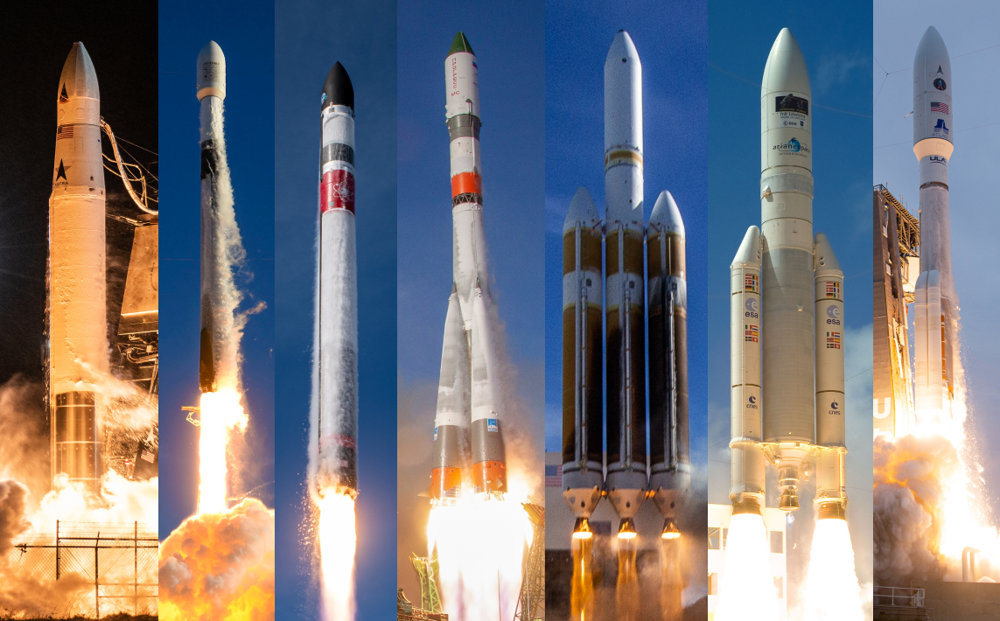
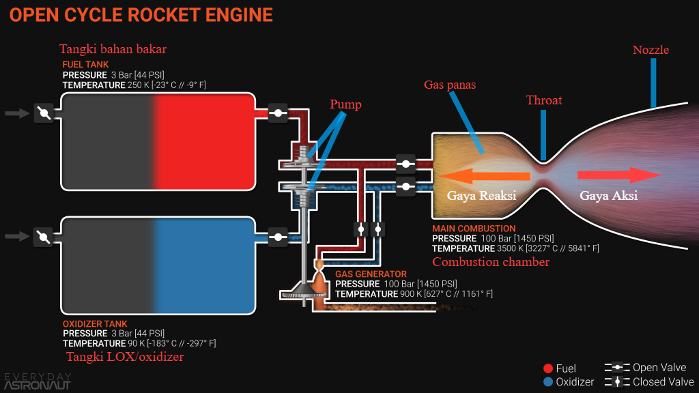
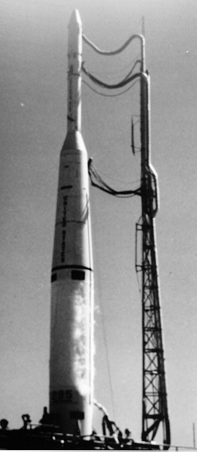
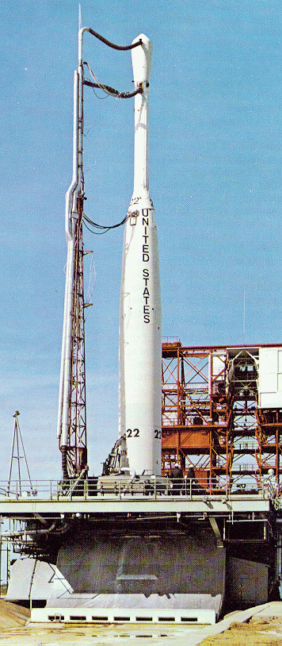
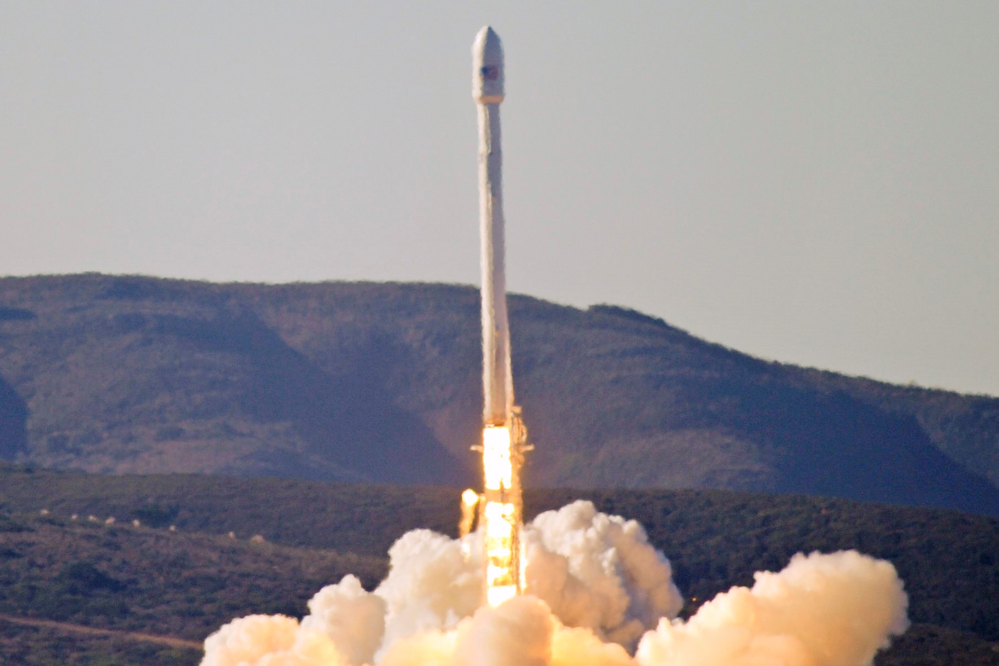
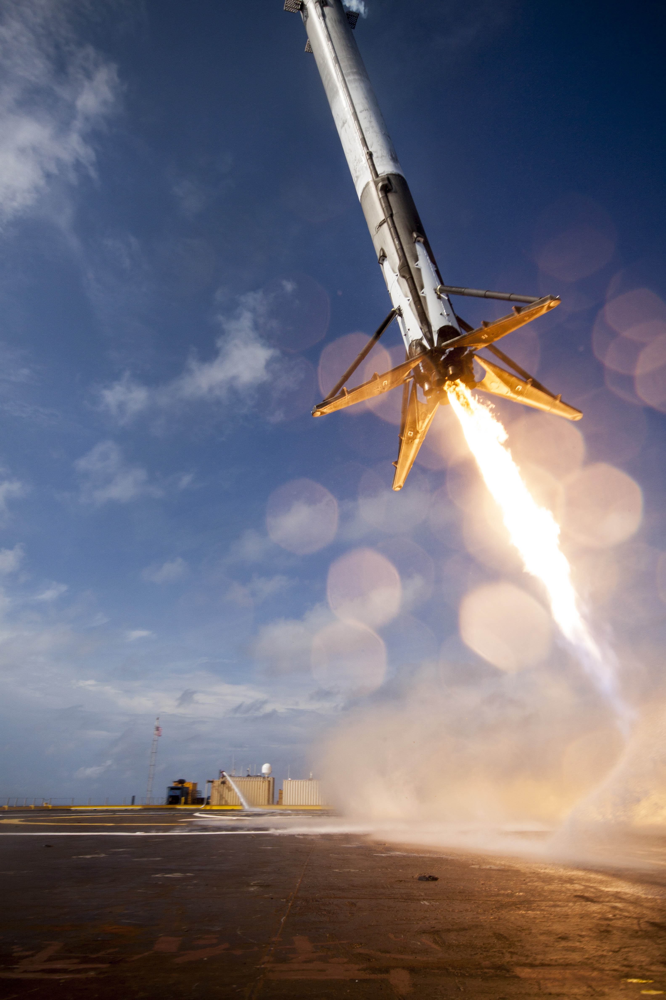
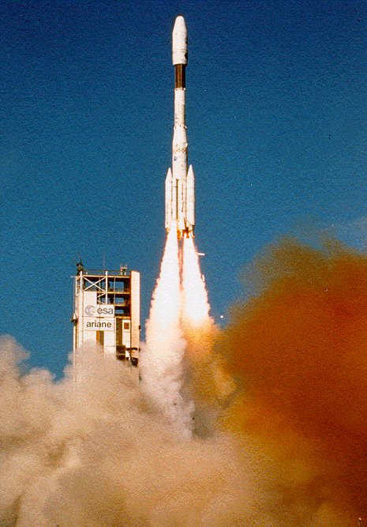

Ulasan mendetail tentang dunia peroketan yang dikemas secara sederhana
Apa itu Roket?

Sebelum kita membahas tentang roket, sebaiknya kita mengetahui apa yang membuat roket dapat bekerja.
Roket bekerja dengan memanfaatkan Hukum Gerak Newton yang ke-3 yang berbunyi:
Gaya aksi dan reaksi dari dua benda memiliki besar yang sama, dengan arah terbalik, dan segaris.
Tenang guys gak usah pusing, mudahnya kita bayangin seorang perenang yang sedang berenang di kolam.
Perenang ini mengayunkan tangannya dari depan ke belakang, proses mengayunkan tersebut memberi gaya
kepada air untuk bergerak ke belakang.
Gaya tersebut yang kita namakan gaya aksi. Kemudian air juga memberi gaya kepada
tangan perenang untuk bergerak maju,
nah gaya ini yang kita namakan gaya reaksi. Untuk informasi lebih lanjut mengenai
Hukum Gerak Newton ke-3
ada di sini!
Pemanfaatan Hukum Gerak Newton yang ke-3 pada roket dilakukan dengan cara yaitu
mesin roket memproduksi gas/fluida berkecepatan
supersonik atau melebihi kecepatan suara (343 m/s) dengan jumlah yang sangat banyak
sehingga menghasilkan gaya aksi yang sangat besar. Hal tersebut menimbulkan
gaya reaksi yang sama besarnya
namun dengan arah berlawanan. Maka dari itu kita selalu melihat badan roket menghadap ke atas dan
mesin roket menghadap ke bawah.
Setelah memahami cara kerja roket saatnya kita gali informasi lebih dalam mengenai apa itu roket.
Menurut wikipedia:
Roket merupakan wahana luar angkasa, peluru kendali, atau kendaraan
terbang yang mendapatkan dorongan melalui reaksi roket terhadap keluarnya
secara cepat bahan fluida dari keluaran mesin roket.
Jadi tidak semua roket digunakan untuk mengantarkan satelit ke orbitnya, tetapi juga
bisa digunakan untuk peluru kendali (rudal) untuk kepentingan militer ataupun
digunakan untuk mengangkut astronot ke tujuannya misalnya International Space Station
(ISS). Namun dengan pesatnya perkembangan teknologi pada saat ini,
kita mungkin akan menemukan kegunaan lain dari roket yang belum pernah terbayangkan sebelumnya.
Selanjutnya kita akan membahas mengenai reaksi fluida yang tertera pada
definisi roket sebelumnya. Fluida yang dimaksud disini adalah bahan bakar roket, yup betul sekali
kalian gak usah bingung dengan kata yang sangat berfisika itu!
Roket berbahan bakar cair telah
dikembangkan sejak tahun 1900-an oleh para peneliti dan insinyur dari Amerika, Jerman/Nazi, ataupun
Uni Soviet/Rusia untuk kepentingan tertentu.
Pada saat itu jenis bahan bakar/propelan yang digunakan adalah campuran gasoline dan liquid
oxygen (LOX) oleh seorang insinyur Amerika, Robert H. Goddard. Gasoline yang dimaksud
adalah bahan bakar minyak (BBM) atau yang sering disebut sebagai "Bensin" oleh orang Indonesia.
Kedua fluida tersebut disimpan pada tempat yang berbeda (tangki gasoline dan tangki LOX), lalu
keduanya dialirkan ke ruang bakar (combustion chamber) dengan cara disemprotkan
(injeksi) agar terjadi reaksi kimia yang menghasilkan gas/plasma yang bertekanan tinggi dan memiliki
energi yang sangat besar.
Kemudian gas/plasma tersebut harus dikeluarkan dari combustion chamber agar tidak terjadi ledakan.
Arah keluarnya gas tersebut telah ditentukan sesuai kebutuhan, dalam kasus ini, roket, arah
keluarnya yaitu ke bawah (menghadap ke tanah).
Pengeluaran gas tersebut diikuti oleh tekanan dan energi yang dimilikinya sehingga menimbulkan
sebuah gaya aksi yang arahnya sama dengan arah pengeluaran gas tersebut. Sesuai
Hukum Gerak Newton ke-3 maka pengeluaran gas tersebut akan diikuti dengan
gaya reaksi yang arahnya berlawanan
(ke atas). Jadi sederhananya semua roket berpropelan cair bekerja seperti berikut:

Menampung propelan pada tangki terpisah
Mengalirkan dan menyemprotkan propelan menggunakan pump ke combustion chamber
Terjadi reaksi kimia yang menghasilkan gas panas dan energi besar
Yup, tidak hanya makhluk hidup saja yang mempunyai keluarga, roketpun memilikinya namun di sini kita
hanya membahas keluarga roket orbital
Singkatnya, roket orbital adalah roket yang mampu membawa dan meletakkan muatan/payload (satelit,
cargo supply, ataupun kapsul berawak) ke orbit rendah bumi (LEO) atau bahkan sampai keluar orbit
bumi. Di sini kita akan membahas 3 keluarga roket orbital yang paling dikenal oleh kalangan umum,
namun jika kamu ingin informasi lebih, silahkan klik link
ini.
1. Delta

Thor-Delta

Delta B
Delta adalah keluarga sistem peluncuran expendable (habis pakai) serbaguna Amerika yang telah
menyediakan kemampuan peluncuran luar angkasa di Amerika Serikat sejak 1960. Jepang juga meluncurkan
turunan (Roket Thor-Delta) yang dibuat dengan lisensi (N-I, N-II, dan H-I) dari 1975 hingga 1992.
Lebih dari 300 roket Delta
telah diluncurkan dengan tingkat keberhasilan 95%. Hanya roket Delta IV Heavy yang tetap digunakan
hingga November 2020. Roket Delta saat ini diproduksi dan diluncurkan oleh United Launch Alliance.
Pada awal pengembangannya, roket Delta menggunakan versi modifikasi dari PGM-17
Thor sebagai tahap pertamanya (first stage).
(PGM-17 Thor merupakan rudal balistik pertama yang digunakan oleh Angkatan Udara Amerika Serikat
(USAF)). Saat itu peluncuran roket (Thor modifikasi) ini tidak selalu menggunakan upper stage (tahap
atas) yang sama, karena insinyur selalu mengembangkan upper stage-nya agar memiliki performa yang
lebih bagus.
Untuk upper stage versi yang ke-4 dinamakan sebagai Delta (huruf ke-4 pada alfabet Yunani), sehingga
kombinasi nama roket ini menjadi Roket Thor-Delta, karena alasan tertentu
keseluruhan roket ini dinamakan sebagai Roket Delta. Pada masanya, Roket Thor-Delta
melakukan 12 peluncuran dengan 1 kali gagal.
Thor-DeltaDelta 0100-series
Pada saat itu, Roket Delta mengalami peningkatan performa dan memperbanyak variasi sesuai kebutuhan
payload. Nama variasinya yaitu Delta A, Delta B, ..., Delta G, kemudian Delta J, Delta K, ..., Delta
N dan Delta M6/N6.
Setelah itu, varian terbaru yang lebih powerful akan menggunakan penamaan dengan sistem angka 4
digit (Aturan penamaan
angka 4 digit). Variasi tersebut yaitu Delta 0100-series, Delta 1000-series, Delta
2000-series, ..., Delta 5000-series, kemudian untuk
Delta 6000-series dan Delta 7000-series biasa disebut Delta II, Delta 8000-series
juga dikenal sebagai Delta III, dan yang terbaru yaitu Delta 9000-series atau
Delta IV. Untuk Delta IV, dia memiliki 2 varian yaitu
Delta IV Medium dan Delta IV Heavy, perbedaannya yaitu untuk Delta IV Medium menggunakan 1 Common
Booster Core dan 2 atau 4 GEM 60 solid booster, sedangkan untuk Delta IV Heavy menggunakan 3 Common
Booster Core. Keluarga Roket Delta akan berakhir pada tahun 2024 dan akan digantikan
dengan keluarga roket baru yaitu Vulcan.
Delta IIDelta IV MediumDelta IV Heavy
2. Falcon
Keluarga Roket Falcon
Keluarga Roket Falcon merupakan
keluarga roket pertama yang dikembangkan sepenuhnya oleh pihak swasta tanpa campur tangan dari
pemerintahan manapun. Yup, semua roket yang pernah kita dengar merupakan turunan atau modifikasi
dari senjata militer suatu pemerintah.
Contohnya seperti Roket Delta, Roket Atlas, Roket V2 (Nazi), Roket Proton, Roket Rokot, dan masih
banyak lagi. Oke balik ke topik, pengembangan awal Keluarga Roket Falcon dimulai dari Roket
Falcon 1.
Falcon 1 adalah kendaraan peluncuran small-lift (mampu membawa payload 2000kg-5000kg) yang
dioperasikan dari tahun 2006 hingga 2009 oleh SpaceX. Roket ini menggunakan propelan LOX/RP-1, LOX
adalah Liquid Oxygen dan RP-1 (Rocket Propellant-1 atau Refined Petroleum-1)
adalah salah satu olahan minyak tanah (kerosene) yang mirip dengan bahan bakar jet namun memiliki
performa pembakaran yang lebih bagus sehingga dijadikan sebagai bahan bakar roket. Roket Falcon 1
telah diluncurkan sebanya 5 kali dengan 3 kali gagal dan 2 kali sukses.
Kelima peluncuran tersebut terjadi pada kurun waktu 2006-2009. Setelah penerbangan kelima,
peluncuran Falcon 1 di masa depan ditunda, dan akhirnya dibatalkan, dan kendaraan tersebut
dinonaktifkan dari layanan,
SpaceX menyatakan “Kami tidak dapat membuat Falcon 1 berfungsi sebagai bisnis.”
Roket Falcon 1 pada peluncuran ke-4
Saat Falcon 1 masih dalam masa aktifnya, SpaceX juga melakukan pengembangan roket penerus dari
Falcon 1 yaitu Falcon 5 dan Falcon 9. Pada tahun 2006, SpaceX menyatakan bahwa Falcon 5 adalah
Falcon 9 dengan empat mesin dilepas. Namun walaupun begitu, pengembangan Falcon 5
dibatalkan karena alasan tertentu. Versi pertama Roket Falcon 9, Falcon 9 v1.0, dikembangkan pada
2005-2010, dan diluncurkan pertama kali pada 2010. Falcon 9 v1.0 melakukan lima peluncuran pada
2010-2013, kemudian dihentikan. Hal tersebut dikarenakan SpaceX pada tahun 2010-2013
telah mengembangkan Roket Falcon 9 v1.1 yang memiliki masa dan daya dorong 60% lebih tinggi dari
Falcon 9 v1.0, serta pada v1.1 di tahap pertamanya (first stage) ditambahkan 4 kaki yang digunakan
untuk menguji coba program pendaratan terkontrol (controlled-descent test program).
Falcon 9 v1.1 beroperasi dari tahun 2013-2016, yang kemudian digantikan oleh Falcon 9 v1.2 (Full
Thrust).

Roket Falcon 9 v1.1

Roket Falcon 9 v1.1 mencoba mendarat di atas drone ship (gagal)
Falcon 9 Full Thrust juga dikenal sebagai Falcon 9 v1.2, memiliki varian Blok 1 hingga Blok 5 yang
dirancang dan diproduksi oleh SpaceX. Dirancang pada 2014-2015, Falcon 9 Full Thrust mulai
beroperasi pada Desember 2015 dan masih beroperasi sampai sekarang dengan varian terbaru Block 5.
Dan pada versi Full Thrust ini SpaceX berhasil mendaratkan tahap pertamanya (first stage) secara
vertikal dan menggunakan mesin roketnya. Hal tersebut membuat Falcon 9 Full Thrust menjadi roket
orbital pertama yang melakukan pendaratan. Di dunia peroketan orbital, semua insinyur menganggap
pendaratan dari luar angkasa (jalur orbit) merupakan hal yang mustahil dilakukan. Dikarenakan
kecepatan dan proses masuk kembalinya roket ke atmosfer bumi pasti akan membuat first stage
mengalami kerusakan. Namun SpaceX dengan Roket
Falcon 9 Full Thrust mereka, mematahkan anggapan para insinyur tersebut, dan pada saat ini SpaceX
telah menginspirasi banyak orang untuk melakukan hal yang sama. Namun SpaceX tidak berhenti pada
Falcon 9 Block 5 saja, mereka saat ini sedang mengembangkan keluarga roket baru yang
memiliki kemampuan luar biasa dan jauh lebih hebat dari Falcon 9 itu sendiri, yaitu Starship dan
Super Heavy Booster.
Roket Falcon 9 Block 5Falcon 9 Block 5 landingFully Stacked Starship and Super Heavy Booster
3. Keluarga Roket Ariane
Keluarga Roket Ariane (kiri ke kanan: Ariane 1, 2, 3, 4, 5, 6)
Ariane adalah serangkaian kendaraan peluncuran sipil Eropa untuk penggunaan peluncuran luar angkasa.
Perancis pertama kali mengusulkan proyek Ariane dan secara resmi disetujui pada akhir tahun 1973
setelah diskusi antara Perancis, Jerman dan Inggris.
European Space Agency (ESA) meminta Airbus Defence and Space untuk mengembangkan semua peluncur
Ariane dan fasilitas pengujian, sementara Arianespace, anak perusahaan komersial CNES (badan
antariksa pemerintah Prancis) 32,5% yang dibuat pada tahun 1980, menangani produksi, operasi, dan
pemasarannya.
Arianespace meluncurkan roket Ariane dari Pusat Antariksa Guyana di Kourou, Guyana Prancis. Ariane 1
adalah peluncur tiga tahap, yang berasal dari teknologi rudal. Dua tahap pertama menggunakan
propelan hipergolik dan tahap ketiga menggunakan hidrogen cair kriogenik dan oksigen cair (LH2/LOX).
Ariane 2-4 adalah versi peningkatan performa dari Ariane 1. Perbedaan utama adalah versi mesin yang
ditingkatkan, sehingga memungkinkan tangki tahap pertama dan ketiga untuk meningkatkan ukuran dan
dapat meluncurkan muatan (payload) yang lebih besar. Versi terbesar dapat meluncurkan dua satelit,
dipasang di adaptor SPELDA (Structure Porteuse Externe pour Lancements Doubles Ariane).
Versi yang lebih baru seperti itu sering terlihat dengan strap-on booster. Tata letak ini ditunjuk
oleh sufiks setelah nomor generasi. Pertama adalah jumlah total booster, kemudian huruf yang
menunjukkan jenis bahan bakar (padat/cair) pada tahapan.
Misalnya, Ariane 42P adalah Ariane 4 dengan dua booster bahan bakar padat. Ariane 44LP memiliki dua
solid booster, dua booster cair, dan 44L memiliki empat booster berbahan bakar cair. Untuk informasi
lebih jelasnya ada di sini!

Ariane 4
Ariane 5 merupakan desain ulang yang hampir menyeluruh dari Ariane 1-4. Dua tahap bawah hipergolik
diganti dengan satu tahap inti LH2/LOX. Hal ini menyederhanakan tumpukan stage roketnya, penggunaan
mesin inti tunggal (Vulcain) juga menjadi penyederhanaan yang sangat berpengaruh pada desain Ariane
5.
Karena core stage tidak dapat mengangkat beratnya sendiri, dua booster bahan bakar padat diikat ke
samping.
Booster dapat dipulihkan (recovered) untuk pemeriksaan, tetapi tidak digunakan kembali. Ada dua
versi tahap atas, satu hypergolic dan dapat dihidupkan ulang dengan satu mesin Aestus dan yang
lainnya dengan mesin kriogenik HM7B yang berpropelan LH2/LOX.
Ariane 5 masih beroperasi sampai sekarang dan memiliki beberapa varian. Namun saat ini, ArianeGroup sedang
melakukan pengembangan Ariane 6 sebagai penerus dari Ariane 5.